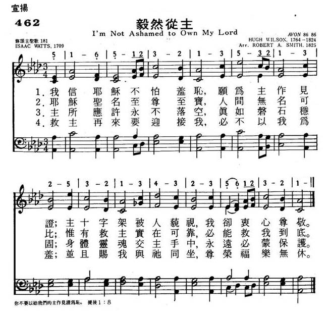

-
I Am Not Ashamed to Own My Lord.〈我認救主無驚見誚〉 · The Octangle Male Choir 八角塔男聲合唱團 -
I'm Not Ashamed To Own My Lord - Old Hymn Song Lyrics
with Orchestral backing music.
https://youtu.be/7jDKzWS4K2M - I'm Not Ashamed To Own My Lord
https://youtu.be/1ex0NEUcj58
Music – Calvary, Free Presbyterian Church, Magherafelt, Northern Ireland.
|
|
|
|
1 I'm not ashamed to own my Lord, 2 Jesus, my God! I know his name, 3 Firm as his throne his promise stands, 4 Then will he own my worthless name |
462毅然从主
1.我信耶稣不怕羞耻，愿为主作见证；
主十字架被人藐视，我却衷心尊敬。 2.耶稣圣名至尊至宝，人间无名可比； 惟有救主实在可靠，必能救我到底。 3.主所应许永不落空，真如磐石稳固； 身体灵魂交主手中，永远必蒙保护。 4.救主再来要迎接我，必不以我为羞； 并且赐我与他同坐，尊荣福乐无休。 |
|
https://www.mred365.cn/szxg/7465.html
 |
|
|
|
|

| Text: | I'm not ashamed to own my Lord |
| Author: | Isaac Watts, 1674-1748 |

| Tune: |
MARTYRDOM
AVON |
| Composer: | Hugh Wilson, 1766-1824 |
| Title: | MARTYRDOM (Wilson) |
| Composer: | Hugh Wilson (1824) |
| Meter: | 8.6.8.6 |
| Incipit: | 51651 23213 213 |
| Notes: | Also known as: ALL SAINTS, AVON, EVENING TWILIGHT, FENWICK, LEMBRANÇAS, SACRED THRONE |
| Key: | A♭ Major |
| Copyright: | Public Domain |
| Short Name: | Hugh Wilson |
| Full Name: | Wilson, Hugh, 1766-1824 |
| Birth Year: | 1766 |
| Death Year: | 1824 |
Hugh Wilson (b. Fenwick, Ayrshire, Scotland, c. 1766; d. Duntocher, Scotland, 1824) learned the shoemaker trade from his father. He also studied music and mathematics and became proficient enough in various subjects to become a part-time teacher to the villagers. Around 1800, he moved to Pollokshaws to work in the cotton mills and later moved to Duntocher, where he became a draftsman in the local mill. He also made sundials and composed hymn tunes as a hobby. Wilson was a member of the Secession Church, which had separated from the Church of Scotland. He served as a manager and precentor in the church in Duntocher and helped found its first Sunday school. It is thought that he composed and adapted a number of psalm tunes, but only two have survived because he gave instructions shortly before his death that all his music manuscripts were to be destroyed.
Bert Polman
Notes
MARTYRDOM was originally an eighteenth-century Scottish folk melody used for the ballad "Helen of Kirkconnel." Hugh Wilson (b. Fenwick, Ayrshire, Scotland, c. 1766; d. Duntocher, Scotland, 1824) adapted MARTYRDOM into a hymn tune in duple meter around 1800. A triple-meter version of the tune was first published by Robert A. Smith (b. Reading, Berkshire, England, 1780; d. Edinburgh, Scotland, 1829) in his Sacred Music (1825), a year after Wilson's death. A legal dispute concerning who was the actual composer of MARTYRDOM arose and was settled in favor of Wilson. However, Smith's triple-meter arrangement is the one chosen most often. The tune's title presumably refers to the martyred Scottish Covenantor James Fenwick, whose last name is also the name of the town where Wilson lived. Consequently, in Scotland this tune has always had melancholy associations. .
Hugh Wilson learned the shoemaker trade from his father. He also studied music and mathematics and became proficient enough in various subjects to become a part-time teacher to the villagers. Around 1800 he moved to Pollokshaws to work in the cotton mills and later moved to Duntocher, where he became a draftsman in the local mill. He also made sundials and composed hymn tunes as a hobby. Wilson was a member of the Secession Church, which had separated from the Church of Scotland. He served as a manager and precentor in the church in Duntocher and helped found its first Sunday school. It is thought that he composed and adapted a number of psalm tunes, but only two have survived because he gave instructions shortly before his death that all his music manuscripts were to be destroyed.
Although largely self-taught, Robert Smith was an excellent musician. By the age of ten he played the violin, cello, and flute, and was a church chorister. From 1802 to 1817 he taught music in Paisley and was precentor at the Abbey; from 1823 until his death he was precentor and choirmaster in St. George's Church, Edinburgh. He enlarged the repertoire of tunes for psalm singing in Scotland, raised the precentor skills to a fine art, and greatly improved the singing of the church choirs he directed. Smith published his church music in Sacred Harmony (1820, 1825) and compiled a six-volume collection of Scottish songs, The Scottish Minstrel (1820-1824).
MARTYRDOM has an effective melodic contour. Sing in harmony with subdued accompaniment. One pulse per bar permits singing in two long lines rather than four phrases.
--Psalter Hymnal Handbook, 1987
"I’M NOT ASHAMED TO OWN MY LORD"
"For
whosoever shall be ashamed of Me and my words, of him shall the Son of Man be
ashamed" (Lk. 9.26).
INTRO.:
A much-loved hymn which presents the idea of not being ashamed of Jesus is "I’m Not Ashamed To Own My Lord" (#273 in Hymns for Worship Revised and #521 in Sacred Selections for the Church). The text was written by the great English hymn-poet, Isaac Watts (1674-1748). It first appeared in his Hymns and Spiritual Songs of 1707. The tune (Azmon or Denfield) to which we sing it was composed in the 1820’s, probably around 1828, by Carl Gotthelf Glaser, who was born in Weissenfels, Germany, on May 4, 1784 and became known as a violinist, music teacher, composer, and choral conductor . After receiving his early musical training from his father, J. M. Glaser, he later attended St. Thomas’s School in Leipzig, where he studied with Johann Hiller and August Muller.
Glaser was also trained on the violin under the Italian master, Campagnoli, who taught for a number of years in Leipzig. Later, Glaser moved to Barmen, Germany, where he became a teacher of voice, piano, and violin. Also, he composed a great deal of choral music and was a well known choral conductor. He died in Barmen on Apr. 16, 1829. The music first appeared anonymously in an 1839 American hymnbook entitled The Modern Psalmist published in Boston, MA, edited by the famous American hymn tune composer and music publisher, Lowell Mason (1792-1872).
Earlier, Mason had made a European tour to study music during which time he obtained new tunes by distinguished composers for his hymnbook, drawing them from English, German, and French sources which had not yet reached this country. Glaser’s father was listed as one source. Mason himself apparently arranged the melody for use as a common meter hymn tune. In his 1859 work, The Sabbath Hymn and Tune Book, he credited the origin of the music to "C. G." (i.e., Carl Glaser). It has been used in various songbooks with a number of different hymns through the years, but it is probably best identified in the minds of many people, and especially among churches of Christ, with these words by Watts.
Among hymnbooks published by members of the Lord’s church during the twentieth century for use in churches of Christ, the song appeared in the 1921 Great Songs of the Church (No. 1, but not in the combined 1925 edition) and the 1937 Great Songs of the Church No. 2 both edited by E. L. Jorgenson; the 1935 Christian Hymns (No. 1), the 1948 Christian Hymns No. 2, and the 1966 Christian Hymns No. 3 all edited by L. O. Sanderson; the 1963 Abiding Hymns edited by Robert C. Welch; and the 1963 Christian Hymnal edited by J. Nelson Slater. Today it may be found in the 1971 Songs of the Church, the 1990 Songs of the Church 21st C. Ed., and the 1994 Songs of Faith and Praise all edited by Alton H. Howard; the 1978/1983 (Church) Gospel Songs and Hymns edited by V. E. Howard; the 1986 Great Songs Revised edited by Forrest M. McCann; and the 1992 Praise for the Lord edited by John P. Wiegand; in addition to Hymns for Worship, Sacred Selections, and the 2007 Sacred Songs of the Church edited by William D. Jeffcoat.
The song presents several reasons why we should not be ashamed of Jesus.
I. Stanza 1 begins by saying that we should not be ashamed of Jesus because He
is our Lord.
"I’m not ashamed to own my Lord, Nor to defend His cause;
Maintain the honors of His Word, The glories of His cross."
A. Both at His birth and at the establishment of the church, Jesus Christ was
proclaimed as Lord: Lk. 2.11, Acts 2.36
B. Because He is Lord, we must be ready to defend His cause by maintaining the
honor of His word, the gospel: Phil. 1.17
C. And we must uphold the glory of His cross, the symbol God’s plan for our
redemption: Gal. 6.14
II. Stanza 2 says that we should not be ashamed of Jesus because His name is all
our trust.
"Jesus, my God! I know His Name, His Name is all my trust;
Nor will He put my soul to shame, Nor let my hope be lost."
A. The name of Jesus means Savior: Matt. 1.21
B. Therefore, trusting in the name of Jesus is important: Acts 4.12
C. There is nothing about Him concerning which we should be ashamed if we serve
Him: 2 Tim. 1.8
III. Stanza 3 says that we should not be ashamed of Jesus because His promises
are as firm as His throne.
"Firm as His throne His promise stands, And He can well secure
What I’ve committed to His hands, ‘Til the decisive hour."
A. Through Jesus Christ, God has granted to us many exceeding great and
precious promises, including the promise of eternal life: 2 Pet. 1.4, 1 Jn. 2.25
B. And these promises are said to be as firm as His throne: Heb. 8.1
C. Therefore, we can trust that He can well secure what we have committed to
His hands: 2 Tim. 1.12
IV. Stanza 4 concludes that we should not be ashamed of Jesus because He will
own us before the Father
"Then will He own my worthless name Before His Father’s face,
And in the New Jerusalem Appoint for me a place."
A. Jesus has promised that if we have the conviction and courage to confess Him
before men, He will confess us: Matt. 10.32-33
B. This He will do before His Father’s face: Rev. 3.5
C. And the result will be that He will appoint for us a place in the New
Jerusalem: Rev. 21.1-5
CONCL.:
Paul determined that he would not be ashamed of the gospel of Christ (Rom. 1.16). And he encouraged others to have the same attitude of not being ashamed of the testimony of our Lord (2 Tim. 1.8). Therefore, every Christian should have the courage and conviction to say, "I’m Not Ashamed To Own My Lord."
https://hymnstudiesblog.wordpress.com/2008/07/17/quoti039m-not-ashamed-to-own-my-lordquot/